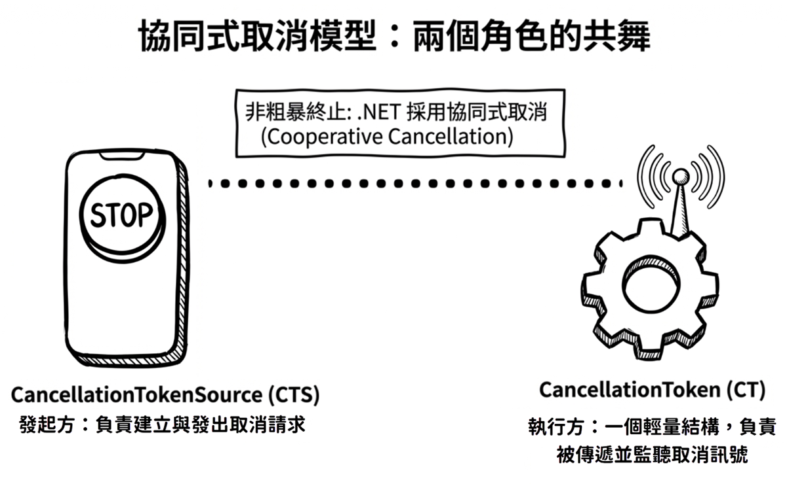
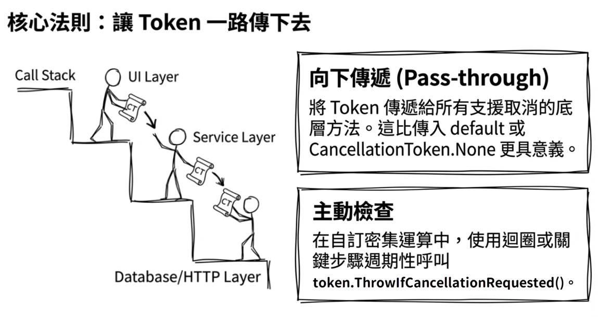
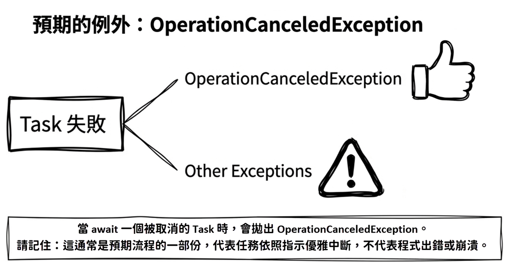

第 4 章：例外處理與取消
在理想的世界裡，每一次網路請求都會成功，每一個檔案都能順利讀取。但在現實世界中，網路會中斷，檔案會遺失，資料庫也可能逾時。一個穩健的應用程式，必須能妥善處理這些非預期的狀況。除此之外，由於非同步操作通常不會立刻完成，如果使用者在資料下載完成前回到上一頁，或者直接關閉了應用程式，我們也必須能取消那些仍在背景進行的任務，以免白白浪費系統資源。
為了處理各種不完美的情況，你會需要了解本章的兩大主題：例外處理（exception handling）與任務取消（cancellation）。
本章的學習目標包括：
- 如何使用
try-catch語法來捕捉await拋出的例外。 - 了解
AggregateException的角色，以及await如何簡化它。 - 掌握 .NET 中標準的任務取消模式：
CancellationTokenSource與CancellationToken。 - 學會為非同步操作實作逾時（timeout）機制。
await 如何處理例外
async/await 最令人讚賞的設計之一，就在於它讓非同步的例外處理寫起來幾乎和傳統的同步程式碼一樣直覺。這意味著，我們依然可以使用熟悉的 try-catch 區塊來捕捉非同步工作所拋出的錯誤。不過，它的底層運作方式，還是有幾個值得特別留意的細節。
先看一個可能失敗的非同步操作，例如嘗試從一個不存在的網址下載內容：
當 GetStringAsync 執行時，如果因為網路連線問題而引發 HttpRequestException，這個例外並不會立刻在當下爆發出來。相反地，它會先被捕捉並儲存在該方法回傳的 Task 物件中。此時，該 Task 的狀態就會被標記為 Faulted（出現故障）。
換句話說，這個例外會一直待在 Task 裡面，直到你的程式碼真正去 await 它的時候，先前儲存的例外才會被重新拋出（re-thrown）。
也正因為這個「延遲拋出」的機制，我們便能很自然地用標準的 try-catch 區塊來處理它。就像這樣：
執行結果：
你可以看到，這個行為非常直觀：只要用 try-catch 區塊包住那些你認為可能出錯的 await 呼叫，就像在撰寫同步程式碼一樣。至於背後那些把例外裝進 Task、再從 Task 裡拿出來拋出的細節，編譯器產生的狀態機會替我們妥善處理。
小心「射後不理」的陷阱
了解了 await 重新拋出例外的機制後，接著來看一個很常見的陷阱：如果你啟動了一個非同步方法，卻既沒有 await 它，也沒有在稍後去觀察那個回傳的 Task，也就是所謂的「射後不理」（fire-and-forget）模式，那麼該方法所拋出的例外就很容易被吞噬，最後演變成難以除錯的「靜默失敗」。
這裡所謂「觀察」一個
Task，通常指的是await它、呼叫Wait()或讀取Exception屬性，讓執行環境知道你已經看過它的失敗結果。
底下是個錯誤示範：
正如先前所說，當一個 Task 發生錯誤卻沒有被等待時，例外就會一直「躲」在那個 Task 物件裡。雖然使用 discard 運算子 (_) 可以消除編譯器的「未等待」警告，但它無法解決例外被吞掉的根本問題。日後，當 Garbage Collector（GC）回收這個死掉的 Task 時，可能會觸發 TaskScheduler.UnobservedTaskException 事件，但在預設情況下，這不會導致程式崩潰，因此這類錯誤往往就變成了難以察覺的「靜默失敗」。
換言之，「先啟動任務，稍後再 await」這種作法本身沒有問題；真正危險的是把 Task 直接丟掉不管。這會導致呼叫端再也無從得知該任務最後到底是成功、失敗，還是被取消。
此外，還有一點需要特別釐清：這裡討論的靜默失敗，僅限於回傳 Task 或 Task<T> 的非同步方法。如果該非同步方法的回傳型別是 async void（例如常見的 UI 事件處理器），情況就完全不同了。在 async void 方法中發生的例外不會被包進任何 Task 裡。它會直接被拋給當時的 SynchronizationContext（如果有的話），或是拋到 ThreadPool。這通常會成為「未處理的例外」（unhandled exception），進而導致整支程式崩潰（crash）。因此，除了 UI 事件處理器等必要情境外，我們應該盡量避免使用 async void。
關於
SynchronizationContext的說明，請參閱第 3 章。
最佳實務：
- 盡量避免 fire-and-forget：除非你有非常明確的理由，否則至少要在某個時間點
await它，或以其他方式明確觀察它的完成結果。 - 如果必須 fire-and-forget：請使用
SafeFireAndForget擴充方法（需自行實作或使用第三方套件）來記錄錯誤，或者在該非同步方法內部最外層包上try-catch確保例外不會外洩。
AggregateException 的角色
除了前面介紹的基本例外拋出機制，在探索 .NET 非同步 API 的過程中，你遲早會遇到一個名為 AggregateException 的特殊例外類型。聽到「Aggregate（聚合）」，你大概可以猜到，它的設計目的就是作為一個可以包裹一個或多個例外的容器。
為了理解它什麼時候會出現，先來看看不使用 await 的情況。當你使用 Task.Wait() 或 Task.Result 這種阻塞式的方法去等待一個故障的 Task 時，任務裡的原始例外（例如 HttpRequestException）不會直接被拋出；它會先被包進一個 AggregateException 裡面，然後才一起拋出。參考以下範例：
var faultyTask = DownloadPageAsync("https://host-not-exist.invalid");
try
{
// 使用 .Wait() 會拋出 AggregateException
faultyTask.Wait();
}
catch (AggregateException ex)
{
// 我們需要從 .InnerExceptions 集合中解開真正的例外
var realException = ex.InnerExceptions.First();
Console.WriteLine(
"捕捉到 AggregateException，真正的錯誤是："
+ realException.GetType().Name);
}執行結果：
這裡故意使用同步阻塞的 Wait() 方法，就是為了示範這件事：出錯的 Task 在「非 await」的情境下，會把多個原始例外包裝成 AggregateException。然而在實務上，我們當然還是應該優先使用 await。
Task.Wait() 與 .Result 之所以會拋出 AggregateException，是因為它們延續了 Task Parallel Library（TPL）的同步等待語意；當任務出錯時，TPL 會將所有產生的例外包裝起來拋出。相對地，await 則採用了更符合開發者直覺的非同步例外傳遞機制，它會直接解開（unwrap） 這個包裝，並重新拋出其中的第一個原始例外。
這也正好解釋了，為什麼在本章最前面那個下載頁面的範例中，我們可以直接 catch (HttpRequestException ex)，而不是處理一整個 AggregateException。有了 await 的幫忙，例外處理的程式碼變得更加專注且簡潔。
既然 await 這麼聰明，那我們是不是就不需要理會 AggregateException 了呢？其實不然。在某些進階情境下，它還是會派上用場。例如，當我們使用 Task.WhenAll 來等待多個可能同時失敗的任務時，就需要費點工夫來處理。
Task.WhenAll 與多重例外
當我們使用 Task.WhenAll 同時等待多個任務時，事情就稍微複雜了一些。想像一下，如果這多個任務不幸地都失敗了，那麼 Task.WhenAll 所回傳的那個代表整體進度的任務，就會一口氣包含所有發生的例外。
當你對這個整體任務使用 await 時，剛才提過 await 會自動解開包裹，但它在面對多重例外時有個限制：它只會傳播其中一個例外。究竟是哪一個，並不保證固定；至於其他例外，則會繼續留在該 Task 的 Exception 屬性裡。請看以下範例：
執行結果：
如你所見，第二個任務的錯誤並沒有被捕捉到。為了解決這個問題，如果你真的需要確保捕捉並處理所有發生的錯誤，就不能單靠 await 拋出的例外；你必須回過頭去檢查 Task 物件本身的 Exception 屬性（因為它的型別正是 AggregateException）。
修改後的程式碼如下：
執行結果：
這個範例在 catch 區塊中的 foreach 陳述式，使用了 null 寬容運算子（null-forgiving operator）!，用意是告訴編譯器：「這裡我確定不會是 null，不用出警告。」若想進一步了解 null 寬容運算子，可參考微軟文件或 《現代 C#：AI 時代的開發者修煉》 第 3 章：空值安全。
Tip
在防禦性程式設計中，如果你真的很在意多筆併發操作（例如多筆資料庫寫入）中「每一次」的失敗原因，建議不要只看
await拋出的第一個例外。你可以像上面的範例一樣，把AggregateException裡面的所有InnerExceptions都記錄（log）下來，這樣就不會漏掉其他連帶的錯誤資訊了。
延伸閱讀： 微軟文件 Consuming the Task-based Asynchronous Pattern 有更完整的 Task.WhenAll、例外聚合與 await 行為說明。
妥善取消任務
看完如何捕捉與處理非預期的例外之後，接著把焦點轉向另一個同樣重要的主題：任務的取消。
為了處理「取消」的情境，.NET 提供了一套標準且清楚的「協同式取消（cooperative cancellation）」模式。所謂的「協同」，顧名思義，就是指取消操作並非粗暴地直接砍掉執行緒；相對地，它是採取溝通的方式：由發起方負責「發出取消的請求」，而正在執行任務的一方則負責「主動監聽該請求，並在適當時機自行中止任務」。這也意味著，如果工作端根本沒有監聽 CancellationToken，取消訊號就會被忽視，工作會繼續跑到自然結束為止。
這個模式是由兩個核心類別所組成：
System.Threading.CancellationTokenSource（CTS）：負責建立與發出取消訊號的物件。可以把它想像成一個「取消按鈕」。System.Threading.CancellationToken：負責傳遞與監聽取消訊號的物件。它是一個輕量的結構，代表一份可傳遞的取消訊號，會被傳遞給需要被取消的非同步方法。

要掌握這個模式，可以先把它簡化成三個步驟：建立 CTS → 傳遞 Token → 在工作端監聽取消訊號，並且在呼叫端妥善處理取消例外。
接著分別來看如何發出取消請求，以及工作端要如何監聽這個訊號。
發出取消請求
整個取消流程的起點，是先建立一個 CancellationTokenSource 物件（簡稱 CTS）：
// 1. 建立 CancellationTokenSource
using var cts = new CancellationTokenSource();
// 2. 從 CTS 取得 CancellationToken
var token = cts.Token;
// 3. 將 token 傳遞給你的非同步方法
// （此處僅展示「傳遞 token」，完整等待與例外處理見後續範例）
Task workTask = DoSomeLongRunningWorkAsync(token);
// 4. 在未來的某個時間點，當你決定要取消時...
Console.WriteLine("使用者決定取消操作！");
cts.Cancel(); // 按下「取消按鈕」當你呼叫 cts.Cancel() 之後，取消訊號就會立刻發送出去，而所有從這個 CTS 所取得的 CancellationToken 都會同步收到這個取消的通知。不過，這個通知並不等於強制終止執行緒；它只是把 Token 的狀態切換為「已要求取消」，並執行已註冊的取消回呼。真正的停止時機，仍取決於工作端何時檢查 Token，或底層支援取消的 API 何時觀察到這個訊號。
Note:
從 .NET 8 開始，
CancellationTokenSource也提供了CancelAsync()。如果你需要「等待」所有註冊在CancellationToken上的回呼（callbacks）或相關取消通知流程都執行完畢，再繼續往下做其他事，就可以使用await cts.CancelAsync()。本章這裡先使用cts.Cancel()，是因為範例要聚焦在「發出取消請求」這個基本概念，而且這個範例本身也不需要等到取消回呼全部完成後，才能繼續往下處理。
監聽並向下傳遞取消訊號
看完發起方的動作，現在把視角切換到另一端。負責執行任務的非同步方法，必須把這個 CancellationToken 當作參數接收進來，接著承擔起兩項責任：
- 週期性地檢查它：如果你的方法包含迴圈或是多個費時的步驟，就必須在過程中不斷檢查是否有收到取消請求。
- 一路向下傳遞（pass-through）它：把你手上的這個 Token 繼續傳遞給底下所有支援取消的呼叫（例如資料庫查詢、HTTP 請求，或是其他的非同步方法）。
這也是在撰寫 C# 非同步程式時很重要的最佳實務：「讓 Token 一路傳下去」。

以下範例同時展示了「持續檢查」和「向下傳遞」。在閱讀程式碼時請特別留意：這個方法不但會在迴圈中主動檢查是否需要取消，同時在呼叫底層的 Task.Delay 時，也沒有忘記把同一個 token 傳遞下去。
static async Task DoSomeLongRunningWorkAsync(CancellationToken token)
{
Console.WriteLine("背景工作已開始...");
try
{
for (int i = 0; i < 10; i++)
{
// 檢查是否已經收到取消請求 (例如在運算密集的迴圈內)
token.ThrowIfCancellationRequested();
Console.WriteLine($"正在執行第 {i + 1}/10 部分的工作...");
// 重要：將 token 繼續向下傳遞給任何支援的底層 API！
await Task.Delay(1000, token);
}
Console.WriteLine("背景工作順利完成。");
}
catch (OperationCanceledException)
{
Console.WriteLine("背景工作已被取消。");
throw; // 通常需要繼續往外拋
}
}正如上面程式碼所展示的，在非同步工作的內部，我們通常會在迴圈或是某些關鍵步驟的開頭，呼叫 token.ThrowIfCancellationRequested() 來檢查 token 是否已經被取消了。如果真的被取消，這個方法就會拋出 OperationCanceledException 中斷任務。
ThrowIfCancellationRequested會拋出OperationCanceledException，而Task.Delay亦有可能拋出OperationCanceledException或其衍生型別TaskCanceledException。
那麼，當工作端拋出中斷例外後，呼叫端會發生什麼事呢？當我們 await 一個已經被取消的 Task 時，剛才提到的 OperationCanceledException（或者是它的衍生型別，像是 TaskCanceledException）就會被重新拋出。因此，我們只要在呼叫端的 catch 區塊中捕捉這個特定型別的例外，就能清楚分辨：原來任務是因為被取消而停止，而不是遭遇了什麼嚴重的系統錯誤。
換句話說，取消例外（canceled exception）通常屬於預期流程，並不代表程式一定有 bug 或出錯了；如果捕捉到其他類型的例外，才需要另行處理。下面的範例把呼叫端和工作端的行為串在一起：
// 1. 建立 CancellationTokenSource
using var cts = new CancellationTokenSource();
// 2. 從 CTS 取得 CancellationToken
var token = cts.Token;
// 3. 將 token 傳遞給你的非同步方法 (先不要立刻 await，讓它在背景跑)
Task workTask = DoSomeLongRunningWorkAsync(token);
// 模擬使用者操作了一段時間後決定取消
await Task.Delay(2500);
// 4. 在未來的某個時間點，當你決定要取消時...
Console.WriteLine("\n[呼叫端] 使用者決定取消操作！");
cts.Cancel(); // 按下「取消按鈕」
try
{
await workTask; // 等待背景工作結束
}
catch (OperationCanceledException)
{
// 這是預期的
Console.WriteLine("呼叫端捕捉到 OperationCanceledException。");
}
catch (Exception ex)
{
// 這才是真正的錯誤
Console.WriteLine($"工作發生異常：{ex.Message}");
}執行結果：

Note: 許多 .NET 內建的非同步 API（例如
HttpClient的諸多方法，還有前面看過的Task.Delay等）都有提供接收CancellationToken的多載版本。請盡可能地使用它們，因為這些 API 在底層往往已經為你提供了最有效率的取消監聽邏輯。也就是說，取消訊號可以直接接到等待、計時器或 I/O 流程中，而不是只能等你的程式下一次手動輪詢 Token 時才反應。
任務取消的原因可能不只一個。例如：
- 情況 A： 最外層的呼叫端反悔了，直接把傳入的
token取消。 - 情況 B： 內層引用的某個套件或元件，因為自己等太久（逾時）而自行取消，並拋出了
OperationCanceledException。
遇到這種狀況時，C# 的 when 子句就能派上用場。它可以用來限縮 catch 捕捉例外的範圍，讓你的程式碼只處理自己關心的取消情境。例如，如果你只想確認「是不是呼叫端傳入的那個 token 觸發了取消」，可以這樣寫：
不過要注意，這種比對方式並不是放諸四海皆準。若中途使用了 CreateLinkedTokenSource，或是底層 API 拋出的 OperationCanceledException 攜帶的是另一個 token，oce.CancellationToken 就不一定等於你原本傳入的那個 token。碰到多個取消來源時，通常更可靠的做法，是用稍後的逾時範例那樣檢查你自己持有的來源 token 是否已經 IsCancellationRequested。
註冊取消回呼（cancellation callbacks）
到目前為止，我們看到的都是如何主動檢查 Token。但有些時候，你手上使用的舊版或第三方 API 可能並不直接支援傳入 CancellationToken；又或者，你需要在任務被取消的那一瞬間，順手做一些額外的清理工作，例如關閉一個已經開啟的 socket 連線、或是刪掉剛才寫到一半的暫存檔。這時可以利用 CancellationToken.Register 方法來註冊取消時的回呼動作：
呼叫 Register 方法後，它會回傳一個實作了 IDisposable 介面的 CancellationTokenRegistration 物件。因此，只要把這個註冊動作寫在 using 宣告或 using 區塊裡，就能確保在操作完成、或者取消回呼（cancellation callbacks）執行完畢後，相關資源都能被正確釋放回收。這個動作看似微不足道，對於避免記憶體洩漏（memory leak）卻很重要。
實務上，取消回呼（callbacks）的程式碼應該盡量保持短小精悍，並且要設計成可重入（reentrant）。因為 callback 可能在取消流程中被執行，如果它做了過度耗時的工作，就會拖慢或嚴重干擾整個取消流程。所謂可重入，指的是即使同一段清理邏輯被重複進入，或和其他清理流程交錯執行，也不應破壞物件狀態。
Important: 註冊回呼的記憶體洩漏陷阱
這裡有個容易被忽略的細節：如果傳入的
CancellationToken是來自一個長壽命（long-lived） 的來源（例如 ASP.NET Core 的ApplicationStopping，或是存活於整個應用程式生命週期的全域 CTS），而我們在每個短暫的操作中呼叫token.Register(...)卻沒有把它Dispose掉，會發生什麼事呢？答案是：你的 callback 委派（以及它所參照到的變數與物件）會被那個長壽命的 CTS 持續保留。久而久之，這就會造成記憶體洩漏（memory leak）。所以，請務必養成好習慣，像範例中那樣使用
using區塊，或是明確呼叫.Dispose()來註銷（unregister）回呼。
延伸閱讀： 微軟文件 Cancellation in Managed Threads 整理了 CancellationToken、Register、linked token，以及取消回呼與 Dispose 的注意事項。
不可取消的 Token
有時候，雖然你呼叫的方法在其簽章中要求你必須傳入 CancellationToken，但你其實不打算提供任何取消機制。遇到這種情況，標準的作法就是傳入 CancellationToken.None。就像這樣：
// 明確表示：對此操作，我不打算提供取消機制
await DoSomethingAsync(CancellationToken.None);這比傳入 default(CancellationToken) 更具可讀性，因為它清楚表達了你的意圖。
實作逾時機制
學會這套取消模式後，實作「逾時（timeout）」就很自然了。所謂的「逾時」，本質上只是「當指定的時間一到，便自動發出取消請求」。
CancellationTokenSource 的建構函式提供了一個方便的多載版本。你只要在建立它時傳入一個時間長度，它就會在該段時間過後，自動幫你呼叫 Cancel()。
先來看一個簡單的範例：
這個範例的重點在於，負責執行任務的 DoSomeLongRunningWorkAsync 方法本身完全不用知道「逾時」這個概念；它只要監聽傳入的 CancellationToken 就好。做為呼叫端，我們只要建立一個會自動取消的 CTS，就能為任何支援 Token 的非同步操作加上逾時限制。這是一個高度可組合（composable）的模式。
不過，在上例中，我們之所以能直接把捕捉到的 OperationCanceledException 解讀為發生了「逾時」，是因為該範例裡只有一個取消來源（也就是我們所建立的那個會自動取消的 CTS）。實務上，你的 API 往往同時還會接收從外部傳入的 CancellationToken，而面對這種雙重來源的情況，你就不能直接把 OperationCanceledException 認定為發生逾時；你需要像下一節介紹的那樣，寫一些邏輯來進一步分辨某次取消究竟是因為跑太久引發的「逾時」，還是呼叫端主動取消了任務。
原始碼： DemoTimeouts
底下是範例程式 DemoTimeouts 的執行結果：
可測試的逾時機制：TimeProvider (.NET 8+)
本節要說明如何利用 .NET 的 TimeProvider 把「逾時」從真實的系統時間中解耦出來，讓你的 timeout 邏輯可以快速且穩定地在單元測試中驗證。
回顧上一節介紹的逾時機制，雖然它寫起來簡單又好用，但一到了單元測試就會碰到一個痛點：我們很難去控制系統時間。試想，如果你需要驗證某個「等待 30 秒後逾時」的邏輯，難道真的要在測試執行時，讓它空轉跑滿 30 秒嗎？這種作法會讓整個測試套件變得又慢又不穩定。
.NET 8 引入了 System.TimeProvider 抽象類別，用來處理這個問題。它允許我們在測試中「快轉」時間，還能對時間的流逝進行精確的控制。
此模式需要 .NET 8+；在測試端可搭配 Microsoft.Extensions.TimeProvider.Testing 套件（命名空間為 Microsoft.Extensions.Time.Testing）中的 FakeTimeProvider。使用時，第一步通常是透過依賴注入（dependency injection）或方法參數，把 TimeProvider 傳入服務中。在正式環境下，我們會注入 TimeProvider.System；而在測試時，則改注入 FakeTimeProvider。
範例：
public class MyService(TimeProvider timeProvider)
{
public async Task DoWorkWithTimeoutAsync(CancellationToken token)
{
// 使用 CancellationTokenSource 的建構函式來傳入 TimeProvider
// 這與 new CancellationTokenSource(delay) 類似，但它是可測試的！
var seconds = TimeSpan.FromSeconds(30);
using var cts = new CancellationTokenSource(seconds, timeProvider);
// 連結外部傳入的 token (如果外部取消，我們也要取消)
using var linkedCts =
CancellationTokenSource.CreateLinkedTokenSource(
token, cts.Token);
try
{
await DoActualWorkAsync(linkedCts.Token);
}
catch (OperationCanceledException)
when (cts.Token.IsCancellationRequested
&& !token.IsCancellationRequested)
{
// 只有在 timeout token 已取消、
// 且外部 token 尚未取消時，才視為逾時
throw new TimeoutException("操作已逾時。");
}
}
}這裡先用 CancellationTokenSource 的 CreateLinkedTokenSource 方法，把兩個本來獨立的取消訊號連結（合併）在一起：一端是外部傳進來的主動取消（token），另一端則是靠時間驅動的逾時取消（cts.Token）。這是為了確保：只要這兩端的任何一方觸發了取消訊號，都能順利停止後續的工作。
另外值得注意的是，CreateLinkedTokenSource 方法會回傳一個全新的 CancellationTokenSource 實體，我們將它妥善保存在 linkedCts 變數裡備用。也因此，範例使用 using var linkedCts 來確保它會被釋放：linked CTS 會向來源 Token 註冊取消通知，用完後釋放它，才能解除這些註冊，避免短生命週期的操作被長生命週期的 Token 間接保留。
前置作業準備好後，程式隨即進入 try 區塊，開始執行非同步工作。若有取消例外發生，關鍵就在於 catch 捕捉時搭配的例外篩選條件：我們藉由判斷當下狀態，限定只有在「timeout token 已經被觸發取消、同時外部 token 卻還沒有被取消」的條件下，才改為拋出更具語意的 TimeoutException。如果是呼叫端主動取消（外部 token 觸發），我們就什麼都不做，讓系統保留原始 OperationCanceledException 的取消語意。
註：為了聚焦逾時與取消流程，上例省略了
DoActualWorkAsync的實作細節；完整可編譯版本請參考本節附的範例專案。
撰寫單元測試時，只要改用 Microsoft.Extensions.Time.Testing 裡面的 FakeTimeProvider 來當替身，傳入一個模擬用的 TimeProvider，就能自由操控時間。
FakeTimeProvider 並不會真的更改系統時間，它只是攔截程式碼對 TimeProvider API（例如 GetUtcNow()）的呼叫，並回傳人為設定的假時間，因此不會影響系統或其他執行緒的時間感知。參考以下範例：
[Fact]
public async Task Should_Throw_TimeoutException_When_Time_Passes()
{
// Arrange
var fakeTime = new FakeTimeProvider();
var service = new MyService(fakeTime);
// Act
var task = service.DoWorkWithTimeoutAsync(CancellationToken.None);
// Assert: 此時任務應該還沒完成
Assert.False(task.IsCompleted);
// Act: 讓時間快轉 30 秒 + 1 tick
fakeTime.Advance(TimeSpan.FromSeconds(30) + TimeSpan.FromTicks(1));
// Assert: 任務應該因為逾時而拋出 TimeoutException
await Assert.ThrowsAsync<TimeoutException>(() => task);
}在上面的測試程式中，最後一個 assert 陳述句的意思是：「測試走到這裡時，我預期這個任務一定會拋出 TimeoutException」。以下進一步拆解說明：
Assert.ThrowsAsync<TimeoutException>(...)是 xUnit 測試框架所提供的非同步斷言方法。它的功用就是在宣告：「我預期傳入括號裡的那個動作，最後必定會因為拋出TimeoutException而失敗。」- 括號裡的
() => task則是一個Func<Task>委派。它等於是把那個「要被驗證的 task」交給ThrowsAsync去檢驗。 - 最外層的
await會等待斷言動作本身執行完成。一旦執行過程中真的出現TimeoutException，則斷言成立，測試順利通過。 - 反過來說，如果在執行期間沒有拋出任何例外，或者拋出的是其他例外型別（例如
OperationCanceledException），那麼測試便會失敗。
透過 TimeProvider，我們不僅能寫出更穩健的逾時邏輯，也能讓那些動輒需要等待數十秒的測試，在幾毫秒內執行完畢，而不必真的去等待那些時間。這是 .NET 8 為需要處理時間的 API 帶來的重要改進。
原始碼： DemoTimeProviderTest
延伸閱讀： 微軟文件 What is TimeProvider?
結語
本章聚焦在非同步程式設計裡最常見的「非理想情境」。我們學會了如何用熟悉的 try-catch 處理非同步例外，也理解了 await 如何幫我們免去手動拆解 AggregateException 的負擔。
更重要的是，我們掌握了 .NET 標準的協同式取消模式。透過 CancellationTokenSource 與 CancellationToken，我們不但能讓使用者主動取消長時間任務，也能替非同步操作加入逾時保護。
現在，你已經具備撰寫穩健非同步程式碼的重要基礎：不只會處理成功路徑，也知道如何妥善因應失敗與取消。下一個挑戰則是，當多個非同步任務同時執行並共享資源時，該如何確保資料的完整性與一致性；這正是下一章「執行緒同步與經典問題」要探討的主題。
購買電子書（無 DRM）： Google Play 圖書 樂天 Kobo 讀墨 Readmoo